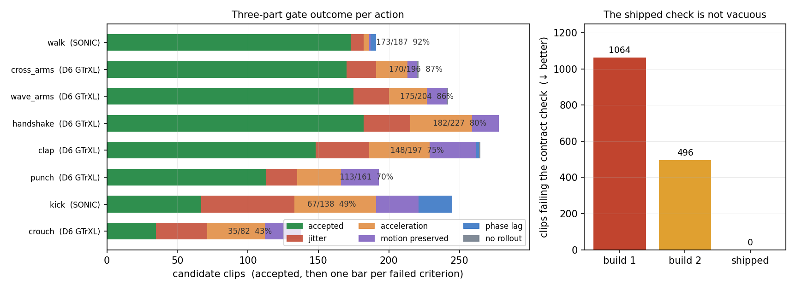
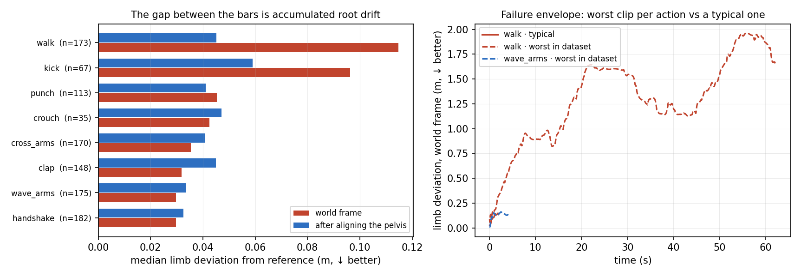
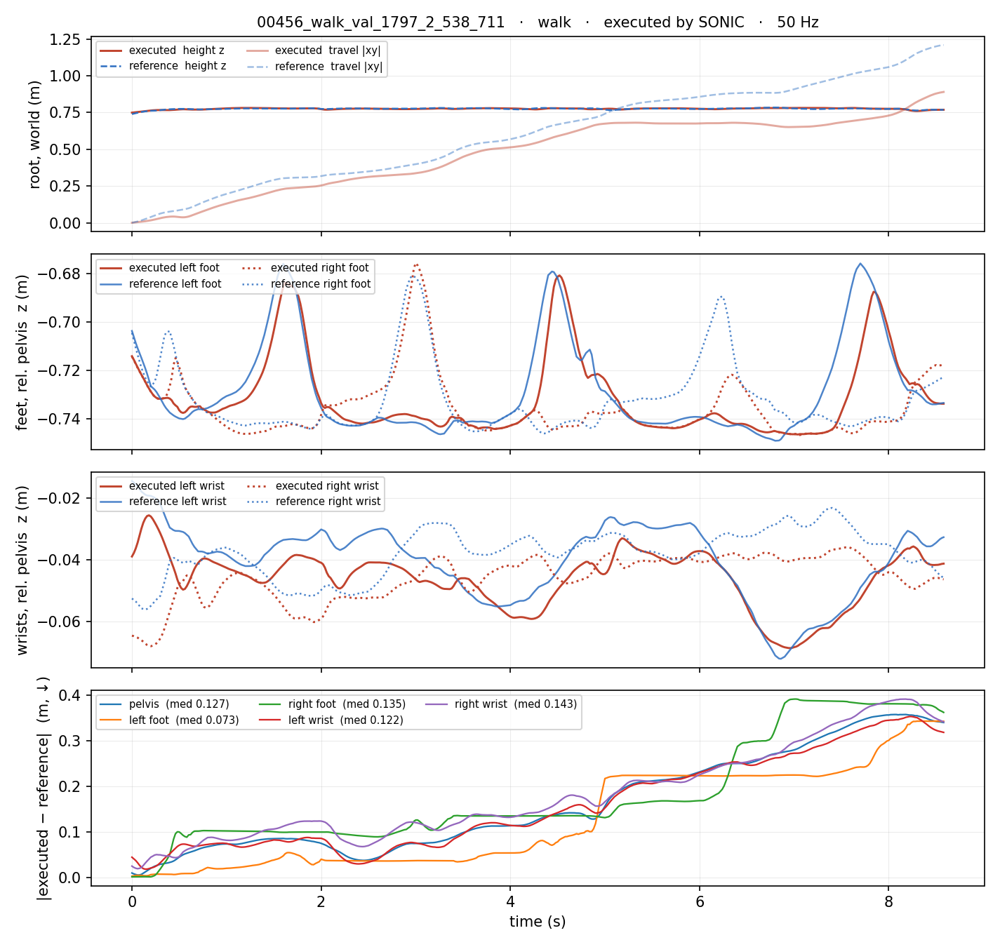
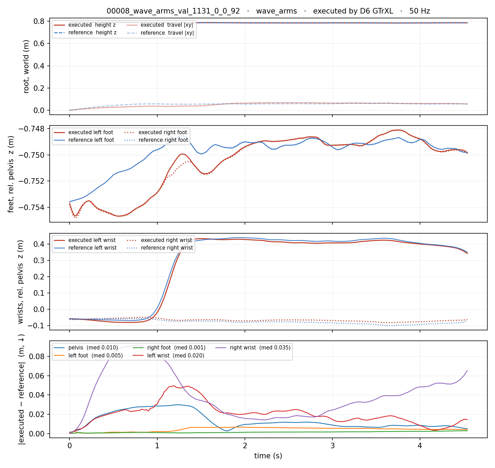
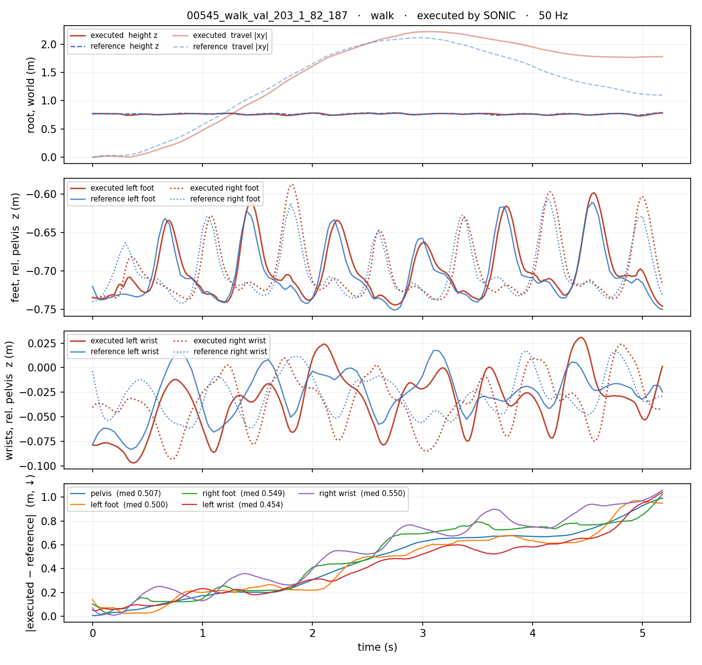
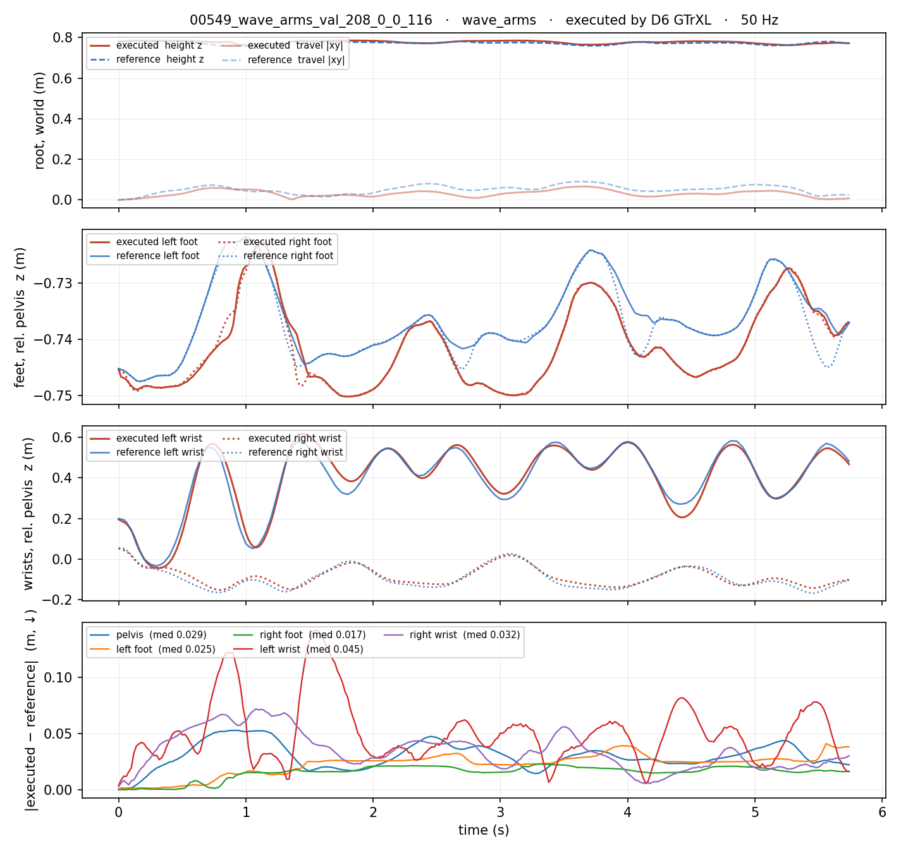

Generated from Markdown source: docs/report/2026-07-29-v3-rollout-dataset-schema-defects-and-delivery-verification.md
VAD_Cleaned_50Hz_Rollouts_V3：构建口径、交付核验与跟踪质量包络
Date/scale:
2026-07-29/ 1392 候选 → 1063 clip · 10111 秒 · 8 动作 · 两个执行器 · 50 Hz Output profile:markdown-project-reportResults profile:dataset-verifierVerdict:PASS
这批数据是给 Latent Diffusion Planner 训练用的执行态轨迹：把带情感标注的参考动作交给物理控制器在仿真里实跑一遍，只留下机器人真正做出来的状态。本报告给出完整口径——每个动作交给哪个控制器、凭什么筛、筛出来什么、以及交付版的跟踪精度在典型与最坏情况下各是多少。
1. Conclusion
PASS。
- Decisive evidence: 1063/1392 候选 clip（76.4%）通过四条筛选判据，共 10111 秒；locomotion 改由 SONIC 执行后 walk 过门率 92%，而同一道门下 D6 只有 0.5%（主表、表 A1）。
- Decisive evidence: 对齐骨盆后，全部八个动作的肢体偏差落在 0.033–0.128 m；交付版通过数据集自带的契约校验，1063 条 0 失败，同一校验器在被它取代的两个早期构建上分别报 1064 与 496 处失败（图 1 右）。
- Counter-signal: 筛选判据全部作用于关节量，不读世界坐标位置。 世界系肢体偏差跨动作相差 45 倍，walk 中位 0.116 m、最差 1.314 m，差额几乎全是沿时间累积的根部漂移，只出现在两个 locomotion 动作（图 2）。动作时长分布也偏斜：三个上肢动作占 65%，kick 仅 2.2%。
- Decision: 交付
Tracked_Cleaned_VADCompose_V3_planner50hz_rev3.tar.zst（sha2560162201916ec4b27…）。消费相对姿态的下游可直接使用；消费世界坐标轨迹的须自行处理漂移，或按主表 p90 列设阈值筛选。
2. Problem and terminology
研究问题：在"不抖动、物理可执行"的前提下，怎样从 rollout 采出可用于 planner 训练的 50 Hz 执行态数据；每个动作该由哪个控制器产出；以及交付出去的这批文件，其内容与精度实际如何。
出发点是两个控制器互补且都已实测到的失败模式：
- D6 GTrXL 的失败在 locomotion。 六个上肢/蹲起动作上 jerk 比 0.84–1.16、相位延迟 0 ms，可用；但 walk/kick 上 jerk 比 6.77 / 4.40，执行态运动量达参考的 2.7× / 1.9×——多出来的运动在参考里根本不存在，是它自己生出来的抖动。
- SONIC bare 的失败是两种"高分陷阱"。 locomotion 忠实（jerk 比 1.14 / 1.45、运动量保留 1.01 / 1.03、腿部延迟 20–40 ms），但它会把动作低通抹平（crouch 运动量只剩参考的 0.85，蹲浅了 15%），并且上肢系统性晚 80–100 ms，用延迟买平滑。
两个设计决定由此而来：按动作分配控制器（取各自的强项），以及筛选判据必须是三部分——只卡抖动的单边门会被上面两个陷阱刷分。
| Term | Operational definition in this report | Scope / not to confuse with |
|---|---|---|
| 执行态 rollout | 参考动作交给控制器在物理仿真里跑出来的机器人状态；数据集只存这一份 | 与被跟踪的"参考动作"相反，后者存在另一棵参考树里，不入库 |
| D6 GTrXL | DAgger 第 6 轮 GTrXL 学生，本项目训练；本数据集中只负责六个非 locomotion 动作 | 见 MOE specialist distill 报告 |
| SONIC bare | 冻结的外部 GEAR-SONIC ONNX 策略，未在本项目数据上微调；只负责 kick 与 walk | 不可与本项目的 checkpoint 互换加载 |
| 生产门 | 式 (1)–(4) 的合取，逐 clip 判定是否入选。全部作用于关节量 | 不含任何世界坐标位置判据——这正是 §4 单独测量位置偏差的原因 |
| 世界系肢体偏差 | 双脚 + 双腕四点，执行与参考同帧世界坐标欧氏距离，逐 clip 取时间中位后按动作聚合。单位 m，↓ 更好 | 包含根部漂移 |
| 对齐骨盆后偏差 | 同上四点，但两侧各减去各自骨盆位置后再比。与上一项之差即累积漂移 | 不是去掉了误差，而是把"全局位置错"与"肢体动作错"拆开 |
| 契约校验 | scripts/validate_v3_dataset.py：读数据集自带 data_contract.json 声明的必需字段与标签来源，逐 clip 核对内容不变量；检查了 0 个文件显式判为失败 |
只判内容与声明是否一致，不判动作质量 |
3. Method
3.1 筛选判据
记 q_exec, q_ref ∈ R^{T×29} 为同一 clip 的执行态与参考关节角序列（50 Hz，取公共前缀 T 帧），f = 50。逐关节有限差分：
v = Δq · f （关节速度） a = Δv · f （加速度） j = Δa · f （jerk）
RMS(x) = sqrt( mean(x²) )，对全部 29 关节 × 全部帧池化
(1) 抖动-jerk R_j = RMS(j_exec) / RMS(j_ref) R_j ≤ 1.5
(2) 抖动-accel R_a = RMS(a_exec) / RMS(a_ref) R_a ≤ 1.5
(3) 运动量保留 R_v = RMS(v_exec) / RMS(v_ref) 0.85 ≤ R_v ≤ 1.15（双边）
(4) 相位延迟 τ* = argmax_{|τ| ≤ 200 ms} ρ( shift(v_exec^G, τ), v_ref^G ) |τ*| ≤ 40 ms
ρ = 逐关节去均值后的归一化互相关
关节组 G：walk 与 kick 取腿部关节 (0–11)，其余动作取手臂关节 (15–28)
入选 ⇔ (1) ∧ (2) ∧ (3) ∧ (4)
每一式各堵一条 §2 已实测的失败通道：式 (1)(2) 拦自生抖动；式 (3) 的下界拦低通抹平、上界拦运动量虚增，取双边是因为单边门只罚"比参考抖"、反而奖励把参考抹平的控制器；式 (4) 拦用延迟买平滑，因为延迟不改变任何整段统计量，前三式对它全盲。
3.2 构建与核验
| Item | Setup |
|---|---|
| 候选集 | vadcompose_v2_unilab_npz/ 全量 1392 clip（train 1113 / val 139 / test 140），8 动作 |
| 参考动作 | 20 Hz 情感标注动捕线性插值到 50 Hz；情感标签取自同一次插值产出的冻结 sidecar |
| 控制器分配 | kick·walk → SONIC bare；clap·cross_arms·crouch·handshake·punch·wave_arms → D6 GTrXL |
| 落盘方式 | 逐条拷贝，数据集自包含，不含指向构建产物的符号链接 |
| 位置偏差口径 | 全部 1063 条，逐 clip 时间中位 → 按动作取中位 / p90 / 最大，无抽样 |
| Criterion | Threshold | Measured | Verdict |
|---|---|---|---|
| walk 平滑度较 V2 改善 | 生产门过门率 > 50% | 92%（同门下 D6 为 0.5%） | PASS |
| 核心字段齐备 | 16 项必需字段，每条 clip 全有 | 1063 / 1063 | PASS |
| 四元数约定统一 | root_rot == root_quat_wxyz 置换到 xyzw |
1063 / 1063 | PASS |
| 参考字段是真实轨迹 | 逐帧恒定（导出别名 bug 的特征）的 clip 数 = 0 | 0 / 1063 | PASS |
| 情感标签单一来源 | 与契约声明源偏差 = 0 的 clip 数 = 全部 | 1063 / 1063 | PASS |
| 校验器非空转 | 同一校验器在被取代的构建上须报失败 | 1064 处 / 496 处（图 1 右） | PASS |
| 交付字节可核验 | 压缩包解开后重验通过 | ok=true，1063 条，0 失败 |
PASS |
Run Spec 状态与三次构建的差异
NOT PREREGISTERED — no confirmed Run Spec found after searching: docs/plans/、outputs/plan1_bm_composite_tracker/*.json、相邻 report tree。四条判据的形成过程如实记录，只有第一项属事前声明：
- jerk ≤ 1.5 且 accel ≤ 1.5：来自 V2 报告提出的门控口径，事前已声明。
- 运动量保留 ∈ [0.85, 1.15]：分析中期加入。实测 SONIC 在 crouch 上抹平 15% 运动量，单边门下过 88%、双边门下只过 38%。
- 相位延迟 ≤ 40 ms：分析后期加入。实测 SONIC 上肢系统性晚 80–100 ms，D6 全部为 0 ms。
第 2、3 项是看到数据后加入的判据，不得当作预注册结果解读；它们堵的是判据本身的漏洞，而非为提高某控制器的通过率而设。§4 的位置偏差与 stressor 分析同样是事后测量。
交付版是第三次构建。前两次的问题与修法：
| Build | 问题 | 为什么既有检查看不见 | 状态 |
|---|---|---|---|
| 1 | 参考体位字段每帧存同一姿态（823 条）；root_rot 在两个控制器下分别是 xyzw 与 wxyz；帧索引从 1 起数（240 条）；fps dtype 不统一 |
字段存在、形状正确、数值有限，形状检查全过；置换后的单位四元数模长仍为 1，模长检查也过 | 曾交付，作废 |
| 2 | 情感标签混两个插值版本：D6 半边用采集时现场插值，SONIC 半边取自冻结 sidecar，496/823 条不一致（275 条偏差 > 0.05，最大 0.394） | 无任何检查拿契约声明的源头核对内容 | 未交付，作废 |
| 3 | — | — | 交付 |
筛选结果不受这些修复影响。 判据只消费执行态 dof 与参考 joint_pos；两次导出在这些字段上逐字节相同（1384 条 × 21 字段中 20 个字节一致），把门原样重放，两边同为 823 条 D6 clip 通过、对称差 0 条、被拒原因零差异、7 个指标最大绝对差 0.0。frame_mpjpe_m 同样逐字节相同，故任何已记录的 MPJPE 与 SR 数字均不受影响。
4. Results
主表 — 逐动作产出与位置偏差（全部 1063 条）
| 动作 | 控制器 | 过门 ↑ | 率 ↑ | 时长 (s) | 占比 | 世界系 中位 (m ↓) | 世界系 p90 (m ↓) | 世界系 最大 (m ↓) | 对齐骨盆 中位 (m ↓) | 对齐骨盆 最大 (m ↓) |
|---|---|---|---|---|---|---|---|---|---|---|
| wave_arms | D6 | 175/204 | 86% | 2460 | 24.3% | 0.030 | 0.047 | 0.131 | 0.033 | 0.089 |
| punch | D6 | 113/161 | 70% | 2105 | 20.8% | 0.044 | 0.110 | 0.181 | 0.040 | 0.105 |
| handshake | D6 | 182/227 | 80% | 2008 | 19.9% | 0.029 | 0.049 | 0.150 | 0.033 | 0.102 |
| cross_arms | D6 | 170/196 | 87% | 1185 | 11.7% | 0.034 | 0.044 | 0.113 | 0.040 | 0.105 |
| walk | SONIC | 173/187 | 92% | 986 | 9.7% | 0.116 | 0.271 | 1.314 | 0.044 | 0.120 |
| clap | D6 | 148/197 | 75% | 680 | 6.7% | 0.031 | 0.048 | 0.096 | 0.043 | 0.105 |
| crouch | D6 | 35/82 | 43% | 461 | 4.6% | 0.042 | 0.080 | 0.100 | 0.047 | 0.120 |
| kick | SONIC | 67/138 | 49% | 227 | 2.2% | 0.092 | 0.205 | 0.345 | 0.057 | 0.128 |
| 合计 | 1063/1392 | 76.4% | 10111 |
世界系最大值与最小的动作中位相差 45 倍（0.029 → 1.314），对齐骨盆后全部收敛到 0.033–0.128 m；两个 locomotion 动作的世界系中位是上肢动作的 3–4 倍，对齐后基本持平。

图 1（筛选与校验）：左，逐动作通过门的数量与其余各自被哪条判据拒掉；一条 clip 可同时违反多条，故拒因为独立计数、相加可超过被拒总数。过门率最低的 crouch 与 kick 主要败在抖动与加速度。右，契约校验器在交付版与两个被取代构建上的失败 clip 数。

图 2（失效切片）：左，每个动作的世界系与对齐骨盆后偏差，两者之差即累积根部漂移，条形重合即无漂移问题。右，典型 walk、数据集内最差 walk、最差 wave_arms 的逐帧世界系偏差；右图 clip 按结果选取（该动作偏差最大者），这正是包络图的用途。
代表性 rollout
val/00016_walk_val_1174_0_0_40（walk，SONIC 执行，98 帧 @50 Hz）。实体机器人是数据集存的执行态，叠加的蓝色半透明人形是被跟踪的参考动作，仅供审阅、不入库。关闭参考的版本为 rollout_exec_only.mp4。
5. Analysis
- Finding：判据必须是双边加相位的。 单边平滑门可被两种方式刷高——把参考低通掉（SONIC 在 crouch 上抹 15%），或用延迟换平滑（SONIC 上肢 80–100 ms）。补上运动量双边区间与相位项后两种刷分都被拦下，且 walk 的分配结论不变（SONIC 仍 97%，表 A1）。
- Finding：失效模式只有一种——全局漂移，且只出现在 locomotion。 最差那条 walk 世界系 1.314 m、对齐骨盆后 0.105 m：参考走出去再折返，执行没折返到位，而步态本身跟得住（图 2 右）。相对偏差按各动作参考自身的活动幅度归一后为 7.8%–18.7%，locomotion 落在较好的一端（walk 9.2%），即漂移不牵连相对动作质量（表 A2）。
- Finding：这些 clip 是按设计入选的，不是筛漏。 四条判据全部作用于关节量（§3.1），漂移大的 locomotion clip 能过门是判据定义的结果。本报告不改动判据，只把它没测的那一维量出来交给下游。
- Working interpretation（待验证）：难度指标解释不了这些偏差，动作类型才能。 三个参考侧难度指标与漂移的合并秩相关为 0.44 / 0.57 / 0.39，按动作分组后平均降到 0.19 / 0.24 / 0.16；对肢体偏差更彻底，动作内平均 0.08 / 0.07 / −0.00，且符号在动作间翻转。clip 平均 arousal 对肢体偏差的动作内相关正好为 0，说明它是动作类型的代理变量，不是独立难度轴（表 A2）。
Next
- 消费世界坐标轨迹的下游须自行处理漂移或按主表 p90 列筛选；消费相对姿态的可直接使用。
scripts/validate_v3_dataset.py已随数据集交付，后续构建打包前须先通过它——三次构建的问题全属"字段存在但内容不对"，只有拿契约回读数据才看得见。- 六个上肢动作的判据未经人工校准（阈值由 walk/kick 的标注外推）；kick 的自动判据仍缺，详见既有构建报告。
6. Appendix
表 A1 — 两个控制器在同一道判据下的表现（分配依据）
| Action | D6 jerk 比 ↓ | D6 过门 ↑ | SONIC jerk 比 ↓ | SONIC 过门 ↑ | SONIC 手臂延迟 (ms) ↓ |
|---|---|---|---|---|---|
| walk | 6.77 | 0.5% | 1.14 | 97% | 80 |
| kick | 4.40 | 0.7% | 1.45 | 54% | 80 |
| crouch | 1.37 | 43% | 0.87 | 38%（单边 88%，运动量抹平 15%） | 60 |
| punch | 0.84 | 70% | 0.85 | 0%（延迟卡掉） | 80 |
| clap / cross_arms / handshake / wave_arms | 0.87–1.16 | 75–87% | 0.71–0.98 | 0–51% | 80–100 |
D6 的弱点集中在腿部承重的动作（walk 6.77、kick 4.40、crouch 1.37，其余五个 0.84–1.16）；SONIC 的弱点在上肢相位（全部 80–100 ms，D6 全为 0 ms）。两者互补，故按部位分配。SONIC 的 97% 是分配时在 val+test 上测得，train 侧补跑后全量终值为 92%（主表）。
表 A2 — 参考侧难度指标、归一化偏差与朝向误差
三个难度指标全部只从参考轨迹计算，不从执行态取——后者会循环论证，因为抖的执行既高频又误差大：末端峰值速度（四个末端点相对骨盆速度的逐帧最大值取 p99）、参考关节速度的 8–25 Hz 带通能量 RMS、clip 平均 arousal。
| 难度指标 | → 根漂移（合并 / 动作内均值） | → 对齐骨盆后肢体偏差（合并 / 动作内均值） |
|---|---|---|
| 末端峰值速度 | 0.44 / 0.19 | 0.22 / 0.08 |
| 参考高频能量 | 0.57 / 0.24 | 0.27 / 0.07 |
| clip 平均 arousal | 0.39 / 0.16 | 0.14 / −0.00 |
动作内相关很不均匀：漂移侧 crouch 0.44–0.56、punch 0.31–0.40，而 cross_arms 与 kick 接近 0；肢体偏差侧符号在动作间翻转（clap 对高频为 −0.44，walk 为 +0.44）。合并口径不消动作身份这个混淆项，动作内口径消掉，两者结论不同时以后者为准。
| 动作 | 相对偏差 / 参考活动幅度 | 根部 yaw 误差 中位 (°) | 末帧 (°) |
|---|---|---|---|
| clap | 18.7% | 1.9 | 1.6 |
| crouch | 14.2% | 2.9 | 3.5 |
| handshake | 11.7% | 1.4 | 1.6 |
| kick | 11.2% | 5.4 | 9.4 |
| cross_arms | 11.0% | 3.1 | 1.7 |
| walk | 9.2% | 4.5 | 7.2 |
| wave_arms | 9.1% | 2.3 | 2.1 |
| punch | 7.8% | 2.5 | 2.8 |
绝对相对偏差跨动作只差 1.7 倍（0.033–0.057 m），而各动作参考自身的活动幅度差 2.2 倍（0.229–0.506 m），故归一化后的排序与绝对值不同。locomotion 的根部 yaw 误差是上肢动作的 2–3 倍，朝向偏差乘以行程会放大成位置漂移（7.2° × 2 m ≈ 0.25 m，与 walk 根漂移中位 0.185 m 同量级）；本报告未做逐 clip 归因，此处仅为量级对照，不是分解结论。
表 A3 — 数据集构成与字段
| Split | clip 数 |
|---|---|
| train | 850 |
| val | 103 |
| test | 110 |
| 合计 | 1063 |
16 项必需字段每条 clip 都有：fps、dof、dof_vel、dof_acc、root_pos_w、root_trans_offset、root_rot、root_quat_wxyz、root_lin_vel_w、root_ang_vel_w、body_pos_w、body_lin_vel_w、contact_mask、reference_frame_index、valence、arousal。
SONIC 执行的 240 条由 sonic_raw_to_v2_schema.py 转成与 D6 一致的字段集：dof_acc 为速度差分、body_pos_w 由 G1TorchFK 从 dof 与 root 位姿正算、情感标签从冻结 sidecar 按 clip 名取回并按帧对齐。
控制器特有字段按契约 per_executor_optional_fields 声明保留，不为另一半边伪造：D6 专有六项 body_ang_vel_w、body_quat_wxyz、contact_points、frame_mpjpe_m、policy_action、reference_body_pos_w；SONIC 专有两项 derived_fields、executor。其中 reference_body_pos_w 是采集环境每步相对机器人当前 anchor 重算的参考体位，是执行态的闭式函数，不是可复用的参考轨迹，也无法为另一控制器重建——这是它只在 D6 半边存在的原因。
被拒 clip 的目视审查
判据拒掉的 329 条不在数据集内。为便于核对判据在拦什么，每个动作取 3 条被拒 clip——按判据组合分组、各取该组内最靠近阈值的一条，因为差得远的没有争议，卡在线上的才决定阈值定得对不对——再配 1 条同动作已入选 clip 作对照。
打开被拒 clip 画廊 →（静态只读，没有后端，无法接受标注）
本机可用审核程序打开完整版（684 条，含全部 326 条有执行态的被拒 clip）：
PYTHONPATH=src uv run --with flask python -m VAD_evaluator.review_app.server \
--tracker-manifest outputs/plan1_bm_composite_tracker/v3_gate_review/tracker_review_manifest.json \
--db data/processed/tracker_review/v3_gate_review.sqlite3
被拒 clip 距阈值的分布：133 条在 1.2 倍以内、118 条 1.2–2 倍、68 条 2–5 倍、7 条超 5 倍。walk 一条都没超过 2 倍，clap 最脏（18 条 2–5 倍、3 条超 5 倍）。
逐时轨迹图（四张，含极端 clip）
按"该动作已入选 clip 中门指标最接近中位、时长 4–10 秒"自动选取的典型 clip：


按参考侧难度指标取该时长窗口内最极端的 clip：


四行分别为：根部世界坐标（高度与水平行程）、双脚相对骨盆高度、双腕相对骨盆高度、逐帧世界系偏差。根部画世界坐标是因为全局漂移是真实失效模式，画成相对坐标会按定义把它抹掉；肢体画相对骨盆是为了不让根部漂移渗进每条曲线。
时长窗口是绘图约束不是质量筛选，故这四张图里的"最极端"是窗口内的极端，与主表最大值列不是同一条 clip。
body 索引两边不通用：执行态存 14 个 tracked body（src/VAD_base_model/geometry/g1_fk.py 的 TRACKED_BODIES），参考树保留 MuJoCo 全量并把 world 留在 index 0，故 pelvis 为 1。配对由平均世界距离核验，落在 0.05–0.07 m 的跟踪误差量级，而非配错会产生的米级。
交付物、命令与源码
| 文件 | 大小 | 说明 |
|---|---|---|
data/Tracked_Cleaned_VADCompose_V3_planner50hz_rev3.tar.zst |
631,291,053 B | 交付。sha256 0162201916ec4b27694def77db002329ede4f15a9d9f5199575cfcc0d0b04670 |
..._rev2_SUPERSEDED.tar.zst |
631,253,913 B | 从未交付（情感标签混版本） |
..._rev1_SUPERSEDED.tar.zst |
563,536,164 B | 2026-07-26 构建，曾交付；参考字段冻结 + 缺 root_quat_wxyz |
不解包识别版本：读包内 data_contract.json 的 revision 字段；或检查任一 clip 是否含 root_quat_wxyz（build 1 无）。
uv run python scripts/build_v3_rollout_dataset.py # 构建
uv run python scripts/validate_v3_dataset.py --dataset <dataset dir> # 契约校验
uv run python scripts/plot_v3_gate_outcome.py # 图 1
uv run python scripts/plot_v3_failure_slice.py # 图 2
单条 clip 的世界系偏差 = 双脚双腕四点 ‖执行 − 参考‖ 的逐帧均值再取时间中位；对齐骨盆后 = 同式但两侧各减去各自骨盆位置。接受率 1063/1392 = 0.7636。
证据：outputs/plan1_bm_composite_tracker/ 下的 v3_build_report.json（逐 clip 指标与拒因）、v3_executor_assignment.json、v3_rev3_dataset_validation.json、v3_rev2_rebuild_evidence.json；位置偏差与包络在 docs/report/assets/*.json；数据契约在数据集目录内 data_contract.json。
源码：scripts/build_v3_rollout_dataset.py（构建与判据 (4)）、scripts/score_tracker_jitter_metrics.py（判据 (1)–(3)）、scripts/sonic_raw_to_v2_schema.py、scripts/validate_v3_dataset.py、scripts/plot_v3_endeffector_traces.py、scripts/plot_v3_gate_outcome.py、scripts/plot_v3_failure_slice.py。
与既有报告的关系
判据设计过程的完整论证、42 条人工标注对判据的校准，以及一项与 reward 设计相关的时序发现（kick 的可接受性被整段平均指标全部测不到，但减速段过冲能以 91.3%、置换检验 p=0.015 复现人眼判定），见
三部分门与按动作分配执行器：VAD_Cleaned_50Hz_Rollouts_V3 构建。
本报告不推翻该报告：其全部数字与结论在本次重建后继续成立（§3 折叠区）。本报告是交付版本的完整口径，含该报告没有的契约核验与位置精度包络。
上一代数据集与 tracker：2026-07-23-vad-cleaned-50hz-rollouts-v2-and-tracker.md。